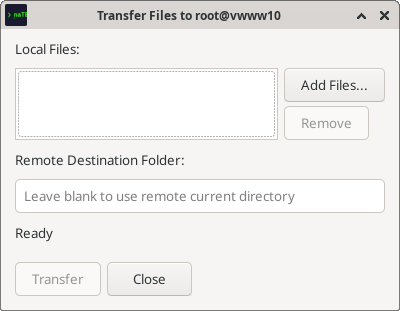
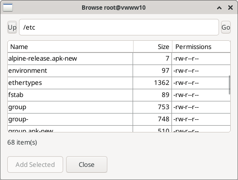

Features
Port forwarding, file transfer, remote edit, X11, search, selection, and more.
Port Forwarding
naTE manages SSH port forwards visually, per session. No need to pass -L / -R flags on the command line.
Opening the port-forward panel
Click the PFW button in the tile title bar (visible on SSH sessions). A panel slides open below the title bar showing all active forwards for this session.

Adding a forward
- Click Add in the port-forward panel.
- Choose Local or Remote mode.
- Fill in the fields and click Verify & Add.
Local forwarding (−L)
Binds a port on your local machine and tunnels connections through the SSH host to a remote endpoint.
| Field | Description |
|---|---|
| Local port | Port to listen on locally (e.g. 8080) |
| Remote host | Host to forward to, as seen from the SSH server (e.g. db.internal) |
| Remote port | Port on the remote host (e.g. 5432) |
Example: Local 5432 → remote db.internal:5432 lets you connect your local PostgreSQL client directly to a remote database via the SSH tunnel.
Remote forwarding (−R)
Exposes a port on the remote SSH server and tunnels connections back to a local host/port.
| Field | Description |
|---|---|
| Remote port | Port to bind on the SSH server |
| Local host | Local address to forward to (usually localhost) |
| Local port | Local port (e.g. your dev server at 3000) |
Example: Remote 8080 → local localhost:3000 exposes your local dev server to the remote machine — useful for showing work to a colleague who has SSH access to the server.
Verify & Add
naTE verifies the forward configuration before adding it and shows a confirmation before closing the add dialog. If the binding fails (port already in use, firewall block), the error is shown inline.

Saving forwards to a profile
Port forwards can be saved to a connection profile so they are set up automatically every time you connect. Add the forwards in the New Connection dialog (SSH tab) before saving the profile.
File Transfer (SFTP)
naTE can upload and download files via SFTP on any active SSH session. Access these via the Terminal menu.
Sending files (upload)
- Focus the SSH session you want to upload to.
- Open Terminal → Send Files.
- The file transfer dialog opens. Click Add Files to choose files from your local machine.
- Set the remote destination folder, or leave blank to use the session's current directory.
- Click Transfer. Progress is shown per-file.

Receiving files (download)
- Focus the SSH session.
- Open Terminal → Receive Files.
- The remote file browser opens. Navigate to the directory you want using Up and the path field.
- Select one or more files and click Add Selected.
- Click Close to begin the download. Files are saved to your local current directory.

How it works: File transfer uses a separate SFTP session opened over a new SSH channel — it doesn't interrupt your running terminal session. You can keep typing in the terminal while the transfer runs.
Remote File Editing
Edit a remote file in your local editor. naTE downloads it, watches for saves, and uploads changes back automatically.
Starting a remote edit
- Focus an SSH session.
- Open Terminal → Edit Remote File.
- The remote file browser opens. Navigate to the file and click Edit.
- naTE downloads the file to a temporary location and opens it in your editor.
- Edit and save normally. naTE detects the save and uploads the new version.
Configuring your editor
naTE uses the Remote editor command setting (Edit → Preferences → Behavior). If unset, it falls back to your $EDITOR environment variable.
- Many GUI editors are single-instance — launching them a second time hands the file to an already-running window and exits immediately, which causes naTE to think the edit is done before you have saved anything. You need a flag that either blocks until the file is closed, or forces a new window. For example:
code --wait(VS Code),mousepad -o window(Mousepad),gedit --new-window --wait(gedit). Check your editor's--helpoutput for the equivalent option.
Auto-upload on save: naTE uses inotify to watch the temp file. Save the file in your editor and the upload happens within a second, without any extra step. This works with editors that do atomic-rename saves (VS Code, gedit).
X11 Forwarding
Run graphical Linux applications on a remote server with their windows appearing on your local desktop.
Enabling X11 forwarding
- In the New Connection dialog (SSH tab), check Enable X11 forwarding.
- Connect. naTE generates an Xauthority cookie and forwards the X11 channel automatically.
- The X11 indicator in the tile title bar lights up when X11 is active.
You do not need to configure DISPLAY manually — naTE sets it for the session.
Requirement: Your local machine must have an X11 display server running (standard on most Linux desktops). The remote server must have X11Forwarding yes in its /etc/ssh/sshd_config.
SSH Agent Forwarding
Agent forwarding lets you SSH from the remote server to a third host using your local SSH key — without copying your private key to the remote.
Enabling
Check Forward SSH agent in the SSH connection options. This is equivalent to ssh -A.
Security note: Agent forwarding should only be used with servers you trust. A malicious or compromised server with root access could use your forwarded agent socket to authenticate as you to other servers while your session is open.
Find in Terminal
Search the full scrollback buffer without leaving the terminal.
Opening search
- Press Shift+Ctrl+F
- Or use Edit → Find in Terminal
A search bar appears at the top of the terminal. If you have text selected, it pre-populates the search field.
Navigating results
- Enter or F3 — jump to the next match
- Shift+F3 — jump to the previous match
- Escape — close the search bar
All matches are highlighted simultaneously. The current match is distinguished with a different color.
Text Selection & Copy
Mouse selection
- Click and drag — select a character range
- Double-click — select the word under the cursor. The word boundary is defined by a configurable regex (Edit → Preferences → Behavior → Word select regex). The default pattern selects any run of non-whitespace characters.
- Triple-click — select the entire line
Copy-on-select
When enabled (default), selected text is automatically copied to the X11 primary selection so you can middle-click to paste it anywhere. Toggle in Edit → Preferences → Behavior.
Copy and paste
- Shift+Ctrl+C on a selection — copies to clipboard (does not send the interrupt signal if text is selected)
- Shift+Ctrl+V — paste from clipboard
- Edit → Paste from Selection — paste from X11 primary selection
- Middle-click — paste from X11 primary selection (if copy-on-select is enabled)
Selection context menu
Right-click on a selection to get a context menu with actions on the selected text:

| Item | Description |
|---|---|
| Copy | Copy the selection to the clipboard |
| Save to File… | Write the selected text to a file on disk |
| Search the Web | Open the configured web search URL with the selection as the query (same as Edit → Web Search) |
| Find in Terminal | Open the search bar pre-populated with the selected text |
| Paste Selection | Paste the X11 primary selection at the cursor (equivalent to middle-click) |
Bracketed Paste
Some terminal applications (vim, shell readline) request bracketed paste mode, where pasted text is wrapped in escape sequences so the app can distinguish paste from typed input. naTE supports this automatically.
When you paste multi-line content into a plain shell prompt (one that does not support bracketed paste), naTE shows a Multi-line Paste confirmation dialog so you can review the full text before it is sent — a safeguard against accidentally running unexpected commands.

Terminal Reset
If a TUI application crashes and leaves the terminal in a garbled state:
- Terminal → Reset Terminal — resets all ANSI modes and attributes without clearing content. Use this when colors are stuck or the cursor is in the wrong mode.
- Terminal → Reset and Clear — resets modes and clears the entire scrollback. naTE will offer to save the scrollback to a file first.
Alternate Screen
Full-screen TUI applications (vim, htop, tmux, man) use the alternate screen buffer — a separate buffer that is restored when the app exits, leaving your scrollback intact. naTE handles this automatically via VT100 escape sequences.
The AltScr button in the tile title bar lets you manually toggle between the main and alternate screen. This is useful when an application crashes mid-session and leaves you stuck on the alternate buffer — press AltScr to get back to your shell.
Web Search
Select any text in the terminal and use Edit → Web Search to open a browser search for that text. The search URL template is configurable in Edit → Preferences → Behavior (default: DuckDuckGo). Replace {query} with a URL-encoded version of the selected text in the template.
URL Detection
naTE automatically detects URLs in terminal output and underlines them. Right-click a URL to take an action:

- Open in Browser — opens the URL in your system default browser
- Copy Link Address — copies the URL to the clipboard without opening it
Scrollback & Saving
naTE keeps a configurable scrollback buffer (default: 100,000 lines). Scroll up with the mouse wheel or the scrollbar to review earlier output.
To save the current scrollback to a file: Terminal → Save Session to File. You can choose the destination file in the save dialog.